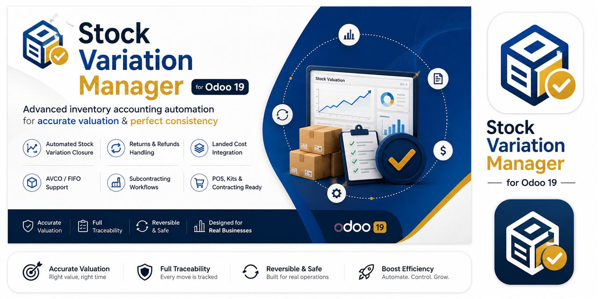
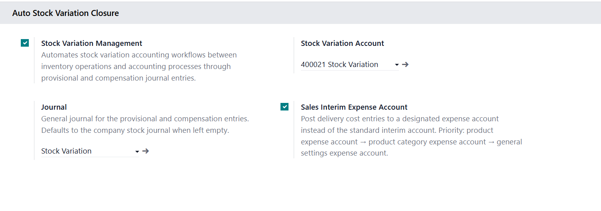

In Odoo 19 perpetual inventory mode, stock accounting entries are deferred until the supplier bill or customer invoice is posted. This creates temporary stock variation differences between inventory movements and financial processes.
Stock Variation Manager eliminates this gap by automatically posting a provisional journal entry the moment a picking is validated — keeping your books balanced in real time, every time.
Automatically generates and manages compensation entries to reduce temporary stock variation balances created by operational timing differences.
Supports customer returns, vendor returns, refunds, reversals, and correction flows while maintaining accounting traceability.
Integrates landed cost impact into inventory accounting workflows and valuation balancing processes.
Designed with practical awareness of Average Cost and FIFO valuation behaviors in real operational environments.
Supports subcontracting valuation and inventory accounting scenarios commonly used in manufacturing and contracting operations.
Handles POS deferred delivery workflows, kits, and kit-based accounting flows.
Prevents duplicate compensation entries and repeated variation closures during operational retries or reversals.
Maintains linkage between stock operations, accounting entries, compensation moves, and reversal workflows.
Suitable for project-based inventory environments where staged operations and delayed invoicing are common.
Enable the module from Accounting → Settings → Stock Variation Management

Inventory accounting is not only about journal entries — it is about operational timing, valuation consistency, and lifecycle control.
Stock Variation Manager was created to help companies bridge the gap between logistics operations and financial accounting by introducing a more structured and automated inventory accounting workflow inside Odoo.
The module is especially valuable for organizations that require:
The module focuses on practical operational accounting workflows rather than theoretical accounting simplification.
It is designed for companies that require:
Inventory valuation behavior can vary significantly depending on company workflows, costing methods, customizations, and accounting configurations. For this reason, all scenarios should be validated carefully on a staging environment before production deployment.
Requires: stock_account · stock_landed_costs · mrp_subcontracting | Odoo 19 · Perpetual Inventory (real_time) | No third-party dependencies